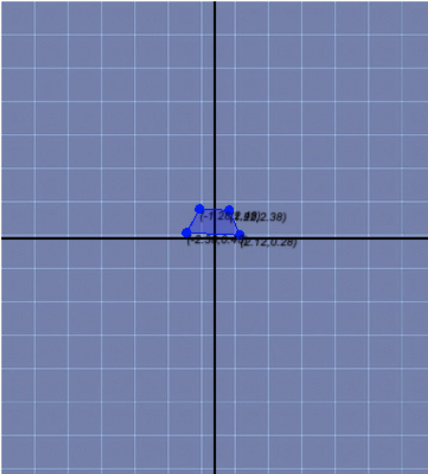
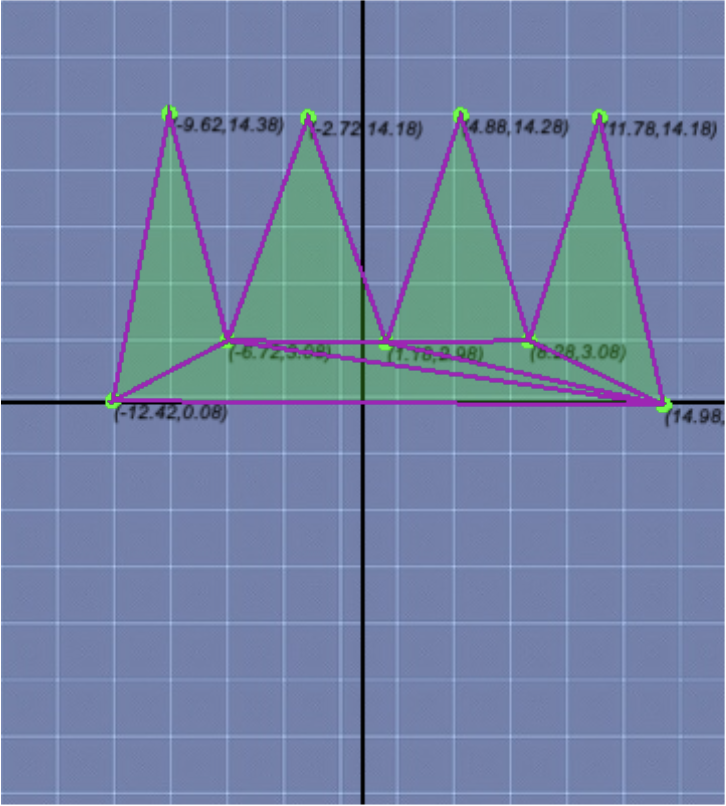
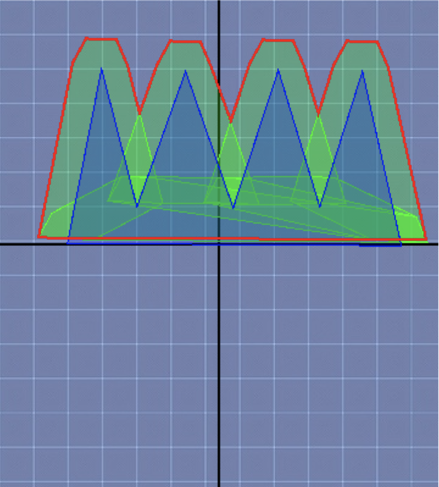

When the robot is a polygon, the configuration-space obstacles are not equal to the work space.
Given a convex robot \(R\) and a convex obstacle \(P\). The \(\textbf{C}\)-obstacle of \(\textbf{P}\), denoted as \(\textbf{CP}\), and the robot \(R\) is defined as the set of points in the configuration space such that the translation of \(R\) intersects \(P\). For visualizing the form of this object the reader could imagine that a robot has a pen attached to it that represents its reference point and he slides the robot around an object without separating it. The figure drawn by the pen represents the \(C\)-obstacle. The figure below shows the work space obstacle object colored green, the robot colored green and the \(CP\) obstacle colored red.
More formally: $$CP := \{ (x,y) : R(x,y) \cap P = \emptyset\} $$The Minkowski Sum or pointwise sum of two sets \(A, B\) is defined as follows: $$ A \oplus B = \{a + b : a \in A, b \in B\} $$ Where \(a\) + \(b\) are the vertor sum of two vectors. Therefore if \(a = (a_x, b_x) \) and \( b = (b_x, b_y)\) then \(a+b := (a_x + b_x, a_y + b_y) \) If we select a point \(c\) and we apply the Minkowski Sum between that point and a set \(B\) the result will be the set \(B\) translated by x. Then in other words \(A \oplus B = \bigcup_{a \in A} (a \oplus B) \) is the union of all the resulting copies of B translated by \(x \in A\).
For a point \(r:=(r_x, r_y)\) there exists its reflecting value defined to be \(-r:=-r_x,-r_y\). Thus a reflecting polygon of \(R\) is defined as \(-R:= \{ -r : r \in R\} \).
Theorem 1Let \(R\) be a planar robot with \(r\) as its reference point and let \(P\) be an obstacle. The \(C\)-obstacle of \(P\) is \(P \oplus -R(r_x,r_y) \).
First if \(R\) is translated so that \(r\) is strictly inside the \(C\)-obstacle it means that \(R\) goes through obstacle \(P\) thus \(R \cap P \neq \emptyset \). Second if \(R\) is translated so that \(r\) lies on the boundary of \(C\)-obstacle then the boundary of \(R\) touches the boundary of \(P\). Finally if \(R\) is translated so that \(r\) is strictly exterior to the \(C\)-obstacle then R and P does not touch each other thus \(R \cap P = \emptyset \).
\(\Rightarrow\)
If \(R(x,y)\) intersects \(P\) then \((x,y) \in P \oplus (-R(0,0))\).
Assume that \(R(x,y)\) intersects \(P\), let \(q = (q_x, q_y)\) be a point in the
intersection. Thus \((q_x - x,q_y - y) \in R(0,0)\) or \((x - q_x,y - q_y) \in -R(0,0)\)
because \(q \in R(x,y)\). Moreover \(q \in P\). Thus \((x,y) \in P \oplus -R(0,0)\).
\(\Leftarrow\)
If \((x,y) \in P \oplus (-R(0,0))\) then \(R(x,y)\) intersects \(P\).
There are points \((r_x, r_y) \in R(0,0)\) and \((p_x, p_y) \in P\) such that
\((x,y)=(p_x -r_x, p_y-r_y)\), in other words \(p_x=x + r_x\) and \(p_y=y+r_y\) that indicates
that \(R(x,y)\) intersects \(P\).
Minkownski Sum Algorithm: Naive approach
Inputs: Two convex polygons \(S1, S2\)
Output: \(S1 \oplus S2\)
\(S_{res} \leftarrow\) []
for (\(s_i \in S1\)):
for (\(s_j \in S2\)):
\(s_{res} \leftarrow s_i \oplus s_j \)
Add \(s_{res}\) to \(S_{res}\)
\(j \leftarrow j + 1\)
\(i \leftarrow i + 1\)
\(S_{res} \leftarrow\) GrahamScan(\(S_{res}\))
return \(S_{res}\)
The algorithm calculates the pairwise sum of vertices belonging to the two polygons received and creates a new set containing these points. Then the convex hull of these points is calculated using the Graham Scan algorithm which has a time complexity of \(O(nlogn)\) where \(n\) is the number of points received.
Thus the time complexity of the algorithm is \(O(nm)\) where \(n\) and \(m\) are the number of vertices of \(S_1\) and \(S_2\) respectively because we need to sum all the pairwise vertices that results into \(nm\) operations.
This algorithm has two main issues:
So can we do it better?
Draw the shape of your robot \(R\).
It must be a convex polygon.
Notice that the reference point is at (0,0) in the
Cartesian Coordinate System.
This shows the \(-R(0,0)\) polygon.
This shows the \(C\)-obstacle in red.
If we experiment with the application we can notice the following observation.
Let \(P\) and \(R\) two convex polygons. Let \(CP= P \oplus R \) be the Minkowski Sum. An extreme point of \(CP\) in direction \( \overrightarrow{\text{d}}\) corresponds to the sum of the two extreme points of \(P\) and \(R\) in the same direction.
The yellow vectors determine the position of the extremes points of polygons following the direction \(\overrightarrow{\text{d}}\). As the lector can see the extreme point in direction \(\overrightarrow{\text{d}}\) of the Minkowski Sum polygon corresponds to the sum of the two previous extreme points.
Theorem 2Let \(P\) and \(Q\) be two convex polygons with \(n\) and \(m\) edges. The Minkownski Sum polygon \(CP = P \oplus R\) will be a convex polygon with at most \(m + n\) polygons.
By definition, the Minkownski Sum of two convex polygons is a convex polygon.
If none of the edges of \(P\) and \(R\) are parallel to each other, \(CP\) will hace exactly \(m + n\) edges. Let \(e\) be an edge in \(P\) and let \(r\) be an extreme point in \(R\). The edge \(e_{CP} = e \oplus r\) will take the same direction that \(e\) in \(CP\) because it is only translated by an extreme point in \(R\). Thus each edge of \(CP\) has the same direction as one of the edges of \(P\) or \(R\) translated by an extreme point of \(R\) or \(P\) so the number of edges of \(CP\) will be \(m + n\).
If one edge of \(P\) is parallel to one of \(R\), \(CP\) will have less than \(m + n\) edges because the sum of those two edges will become one edge in \(CP\).
Two objects \(P1\) and \(P2\) bounded by a simple closed curve are called pseudodiscs if their boundaries \(\delta P1, \delta P2\) intersects in at most two points. A collection of pseudodiscs is made by a collection of simple-closed-curve objects that are pairwise pseudodiscs. The image below shows two objects that are pseudodiscs with two intersection points in yellow.
A point \(p\) is a boundary crossing if \(p \in \delta P1 \cap \delta P2 \) and \(\delta P1\) crosses from the interior of \(P2\) to the exterior of \(P2\) at \(p\). Thus a pair of polygonal pseudodiscs \(P, P^\prime\) has at most two boundary crossings.
The unit cycle centered at the origin will be used to determine the direction of an extreme point \(p\) using a vector that goes from the origin to \(p\). We also define the range of directions \(range(\overrightarrow{\text{d1}}, \overrightarrow{\text{d2}})\) as the set of all points going from \(\overrightarrow{\text{d1}}\) to \(\overrightarrow{\text{d2}}\) following the unit cycle boundary in anticlockwise direction. Thus \(range(\overrightarrow{\text{d1}}, \overrightarrow{\text{d2}}) \neq range(\overrightarrow{\text{d2}}, \overrightarrow{\text{d1}})\)
Let \(P1\) and \(P2\) be two convex polygons with disjoint interiors. Let \(\overrightarrow{\text{d1}}\) be the direction in which \(P1\) is more extreme than \(P2\) and let \(\overrightarrow{\text{d2}}\) be the direction in which \(P2\) is more extreme than \(P1\). Thus \(P1\) is more extreme in all directions of \(range(\overrightarrow{\text{d1}}, \overrightarrow{\text{d2}})\) or it is in \(range(\overrightarrow{\text{d2}}, \overrightarrow{\text{d1}})\).
In the example below, for all the directions in \(range(\overrightarrow{\text{d3}}, \overrightarrow{\text{d1}})\), \(P1\) is more extreme than \(P2\). For \(range(\overrightarrow{\text{d2}}, \overrightarrow{\text{d3}})\) \(P2\) is more extreme. For \(range(\overrightarrow{\text{d1}}, \overrightarrow{\text{d2}})\) both \(P1\) and \(P2\) are equally extreme.
Let P1, P2, and R be convex polygons such that both P1 and P2 have disjoint interiors. Then the two Minkowski Sums \(P1 \oplus R\) and \(P2 \oplus R\) are pseudodiscs.
Let \(CP1 = P1 \oplus R\) and \(CP2 = P2 \oplus R\) be the corresponding Minkownski Sums. It suffices to proof that there exists at most two bondary crossings where \(\delta CP1\) crosses the interior of \(CP2\) to the exterior of P2 at exactly two points \(p\) and \(q\).
By contradiction assume that this is not true. Thus there are four directions \(\overrightarrow{\text{d}_p}, \overrightarrow{\text{d}_q}, \overrightarrow{\text{d}_r}, \overrightarrow{\text{d}_s}\) situated outer normals of points \(p, q, r, s \in \delta CP1\) respectively with \(p, r \in \) interior of \(CP2\) and \(q, s \not\in \) interior of \(CP2\). Thus \(CP2\) is more extreme in \(range(\overrightarrow{\text{d}_p}, \overrightarrow{\text{d}_r})\) while \(CP2\) is more extreme in \(range(\overrightarrow{\text{d}_q}, \overrightarrow{\text{d}_s})\). From observation 1 \(P1\) is more extreme than \(P2\) in \(range(\overrightarrow{\text{d}_p}, \overrightarrow{\text{d}_r})\) and not more extreme in \(range(\overrightarrow{\text{d}_q}, \overrightarrow{\text{d}_s})\) which contradicts observation 3.
Let \(S\) be a collection of convex polygons with \(n\) edges in total. Then the complexity of their union is at most \(2n\).
With all these concepts in mind we are now ready to define an algorithm for calculating the Minkowski Sums between two convex polygons that beats the \(O(nm)\) algorithm previously found.
Minkownski Sum Algorithm: Linear approach
Inputs: Two convex polygons \(S1, S2\) with vertices
\((v_1, v_2, ..., v_n)\) and \((w_1, w_2, ..., w_m)\) vertices
respectively. The vertices are counterclockwise ordered
with v_1 and w_1 to be the smallest y-coordinate vertices
(and smallest x coordinates in case of ties).
Output: \(S_{res} = S1 \oplus S2\)
\(S_{res} \leftarrow\) []
\(i \leftarrow 1\)
\(j \leftarrow 1\)
\(v_{n+1} \leftarrow v_1\)
\(v_{n+2} \leftarrow v_2\)
\(w_{m+1} \leftarrow w_1\)
\(w_{m+2} \leftarrow w_2\)
repeat while (\(i \leq n+1\) and \(j \leq m+1\)):
Add \(v_i + w_j\) to \(S_{res}\)
if \(angle(v_i, v_{i+1}) < angle(w_j, w_{j+1})\)
then \(i \leftarrow i + 1\)
else if \(angle(v_i, v_{i+1}) > angle(w_j, w_{j+1})\)
then \(j \leftarrow j + 1\)
else \(i \leftarrow i + 1\); \(j \leftarrow j + 1\)
return \(S_{res}\)
The idea of the algorithm is to exploit the fact that a vertex in the Mikowski Sum comes from the sum of two extreme vertices from the original polygons that are in the same directions.
This algorithm runs in linear time because at each repetition it increases either \(i\) or \(j\) until it has visited all the vertex of \(S1\) and \(S2\). The algorithm has an elegant way to avoid if conditions in order to include the cyclic structure of the relation between the last and the first vertex of a polygon as part of the verification process. The function \(angle(a, b)\) calculates the angle between \(a\) and \(b\) using the x-axis on \(a\) as a reference point.
The Minkowski Sum of two convex polygons with \(n\) and \(m\) vertices can be computed in \(O(n+m)\) time.
That is much better than the previous algorithm found but still it only works when the two polygons are convex. In the next section we will deal with non-convex polygons.
The Minkowski Sum has the property to be distributive. More formally: given three sets \(S_1, S_2, S_3\), we have \(S_1 \oplus (S_2 \cup S_3) = (S_1 \oplus S_2) \cup (S_1 \oplus S_3)\).
A non-convex polygon of \(n\) vertices can be triangulated with \(n-2\) triangles. Take a polygon with \(n=4\), it can be triangulated with 2 triangles. Then take a polygon with \(n=5\), it can be triangulated with 3 triangles and so on.
In order to calculate the Minkowski Sum of \(R\) and \(P\) such that the former is a non-convex polygon and the later is a convex polygon with \(n\) and \(m\) edges respectively triangulate \(R\) which give \(t_{n-2}\) triangles and taking advantage of the distributive property of Minkowski Sums it suffices to calculate: $$ R \oplus P = \bigcup_{i=1}^{n-2}t_i \oplus P = (t_1 \oplus P) \cup (t_2 \oplus P) \cup ... \cup (t_{n-2} \oplus P) $$
The triangles used for triangulating \(R\) have disjoint interiors. Thus the collection of Minkowski Sums is a collection of pseudodiscs. By theorem 4 the complexity of their union is then linear in the sum of their complexities. Thus \(R \oplus P\) has a time complexity of \(O(nm)\)
Another way to look at it is calculating the Minkowski Sum of \(t_1 \oplus P\) with \(t_1\) as the first triangle resulting of triangulating \(R\) and P as a convex polygon with \(m\) edges and therefore the time complexity of this individual sum will be \(O(3 + m)\) because of theorem 5. Repeat the process for the other n-3\(th\) triangles (\(t_2, t_3, ..., t_{n-2} \)) and thus the total time complexity will be the sum of their individual complexities: \(\overbrace{O(3+m) + O(3+m) + ... + O(3+m)}^\text{n-2 times}\) which leads to the \(O(nm)\).
The complexity of a non-convex and a convex polygon is tight in the worst case. To see this let \(R\) be a convex polygon with \(m\) vertices and let \(Q\) be a non-convex polygon with \(n\) vertices and \(\lfloor\frac{n}{2}\rfloor\) spikes and \(R\) be smaller than \(Q\). Thus \(R \oplus Q\) will have \(\lfloor\frac{n}{2}\rfloor\) spikes with \(m\) vertices at the top of each spike as it is illustrated in the image above.
Polygon R
Polygon Q partitioned into 7 triangles
\(R \oplus Q\) in red and intermediate Minkownski Sums in green.
What if we want to calculate the Minkownski Sum for two non-convex polygons? Let \(R\) and \(Q\) be two non-convex polygons with \(m\) and \(n\) edges respectively. In order to calculate \(R \oplus Q\) it suffices to triangulate \(R\) and \(Q\) in \(r_{m-2}\) and \(q_{n-2}\) triangles and thus apply the pairwise Minkowski Sum and finally get their union of the \((m-2)(n-2)\) polygons. Hence the total complexity of \(R \oplus Q\) will be \(O(n^2m^2)\) which is tight in the worst case. For instance, consider the example below:
Source: Algorithms Robotics
Minkownski Sum Algorithm for non-convex polygons
Inputs: Two non-convex polygons \(S1, S2\) with \(m\) and \(n\) vertices respectively.
Output: \(S_{res} = S1 \oplus S2\)
\(S_{res} \leftarrow\) []
\(polygonsMS \leftarrow []\)
\(triangles_{S1} \leftarrow triangulate(S1)\)
\(triangles_{S2} \leftarrow triangulate(S2)\)
for each \(t_{S1}\) in \(triangles_{S1}\)
for each \(t_{S2}\) in \(triangles_{S2}\)
Add \(MinkowskiSum(t_{S1},t_{S2}) \) to \(polygonsMS\)
\(S_{res} \leftarrow polygonsMS[0]\)
for \(i=1\) to \(i <\) length of \(polygonsMS\)
\(S_{res} \leftarrow Union(S_{res}, polygonsMS[i])\)
\(i++\)
return \(S_{res}\)
A convex or non-convex polygon \(R\).
A convex or non-convex polygon \(P\).
Green Polygons are the pairwise Mikowski Sums resulting from each triangle of polygon \(R\) and \(P\) in the case that both are non-convex polygons. The red polygon represents \(R \oplus P\).
| Time Complexities for Minkowski Sum | ||
|---|---|---|
| Polygon \(A\) with \(n\) vertices | Polygon \(B\) with \(m\) vertices | Complexity of \(A \oplus B\) |
| Convex | Convex | \(O(n+m)\) |
| Convex | Non-convex | \(O(nm)\) |
| Non-convex | Non-convex | \(O(n^2m^2)\) |